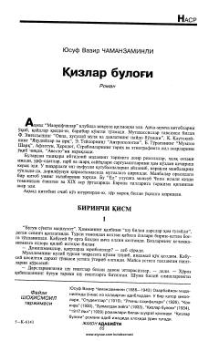

QBQadimgi davrlar va zardushtiylik e'tiqodi haqida hikoya qiluvchi tarixiy roman.
Mazkur asar ozarbayjonlik yozuvchi Yusuf Vazir Chamanzaminli qalamiga mansub bo'lib, unda qadimgi davrlar, zardushtiylik e'tiqodi va o'sha davr kishilarining hayoti tasvirlanadi. Roman tarixiy voqealar va falsafiy qarashlar uyg'unligida yozilgan bo'lib, o'quvchini qadimiy madaniyatlar olamiga yetaklaydi.